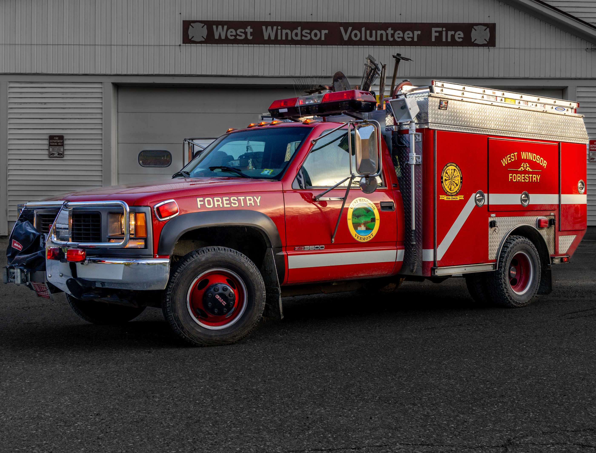

Our current funding goal:
While fire engines may be the first vehicles that come to mind, the Forestry Truck is often the best suited for the majority of calls in West Windsor.
At nearly 30 years old, it's time to upgrade this critical piece of equipment.

Why does West Windsor need to purchase a new Forestry Truck?
- Five-Person Crew: Increases response capacity from two to five firefighters in a single vehicle.
- All-Terrain Versatility: Designed for rapid response to chimney fires, downed trees, and recreational rescues where larger engines can't go.
- Modern Safety: Replaces an aging, non-compliant vehicle with a unit that meets current NFPA standards.
- Mountain Ready: Built to handle the increased call volume and rugged terrain of The Mountain.
- Heavy-Duty Capability: Provides the necessary power to safely tow modern emergency gear without overloading the chassis.
Ways to donate
Thank you for supporting the West Windsor Volunteer Fire Department. Those interested in donating can do so through the following channels:
 @WestWindsorVolunteerFire
@WestWindsorVolunteerFire- Please make personal checks payable to the West Windsor Volunteer Fire Department and mail them to:
PO Box 85
Brownsville, Vermont 05037
For any questions regarding donations, tax receipts, or alternative ways to give, please contact our Treasurer at treasurerwwvfd@gmail.com